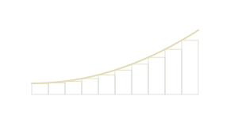
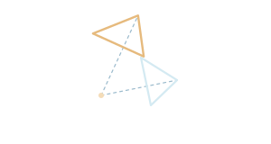
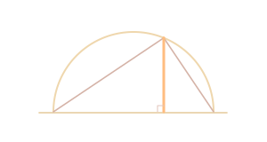
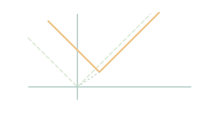
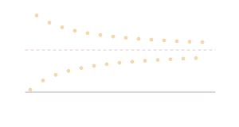

Calculus
Integral Calculus

Aritra DeyIntegration through diagrams, intuition and proof.
PlannedRead a proof, move a point in a diagram, or change the number of trials in an experiment.
Bijections, recurrence, generating functions and probability, with a computational study of the Barnsley fern.
Level 1 · Level 2
Aritra DeyFrom moving a point in the Argand plane to spiral similarity, roots of unity and barycentric coordinates.
5 lectures
Aritra DeyPairing and rearrangement, arithmetic and geometric means, normalization and triangle substitutions.
3 lectures
Aritra DeyExplore functions and graph transformations, then work through the six day-wise homework sets.
6 lectures
Aritra DeyReal numbers and sequences lead to limits, continuity and the Intermediate Value Theorem.
16 lectures
Aritra DeyIntegration through diagrams, intuition and proof.
Planned